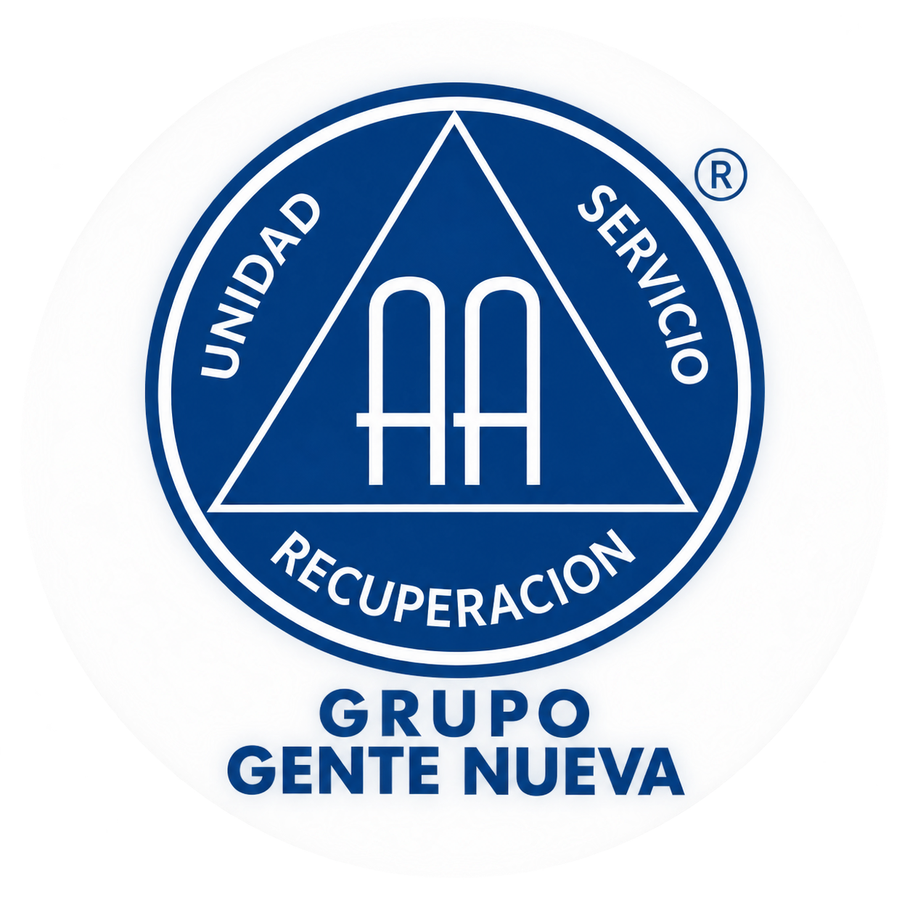

Un lugar para dejar de beber,
un día a la vez
Somos un grupo de Alcohólicos Anónimos en Quito. Nuestro propósito principal es mostrarles a otros alcohólicos precisamente como nos hemos recuperado.
A veces pensamos en dejar de beber para siempre y la idea parece imposible. En A.A. aprendemos a concentrarnos en algo mucho más pequeño: hoy. Porque para llegar al décimo trago primero tiene que existir el primero.
Reuniones continuas

Quiénes somos
Gente Nueva es un grupo de Alcohólicos Anónimos establecido en Quito desde 1982, con más de cuatro décadas llevando el mensaje de recuperación a quienes buscan una manera de dejar de beber. Formamos parte de la Corporación de Alcohólicos Anónimos del Ecuador, organización legalmente constituida en el país e integrante de Servicios Mundiales de Alcohólicos Anónimos. Nuestro grupo se guía por los principios, las Tradiciones y el programa de recuperación de Alcohólicos Anónimos, manteniendo su compromiso de ofrecer un espacio seguro y confidencial donde las personas puedan compartir su experiencia, fortaleza y esperanza. Nuestro propósito primordial es llevar el mensaje de A.A. a la persona que aún sufre por su manera de beber.
¿Es A.A. para usted? Una autoevaluación
Doce preguntas que solo usted puede contestar
Solo usted puede decidir si quiere probar esto, si cree que puede ayudarle. A continuación hay algunas preguntas que le pedimos responder sinceramente. No debería darle vergüenza reconocer que tiene un problema.
¿Es tu primera vez?
Te sugerimos leer las preguntas frecuentes antes de venir. Esta es una comunidad en la que compartimos nuestra experiencia, fortaleza y esperanza para recuperarnos del alcoholismo.
Dirección: Av. 12 de octubre y Roca, edificio Mariana de Jesús, piso 7.